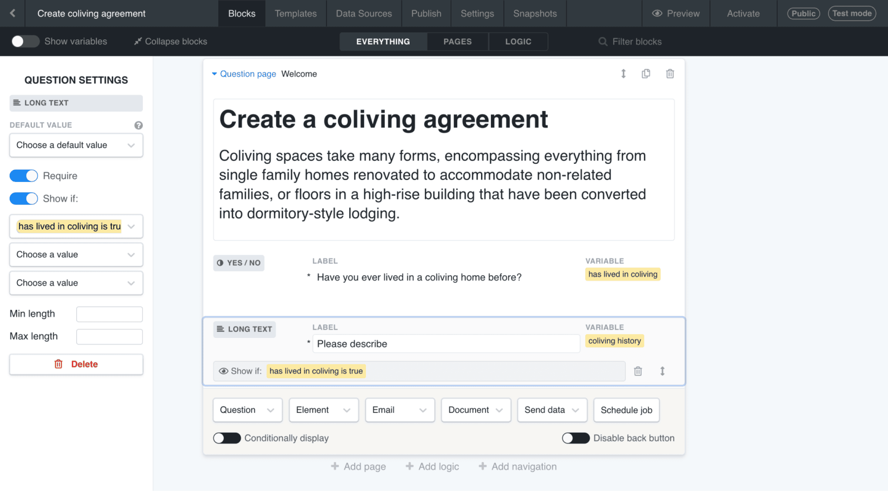
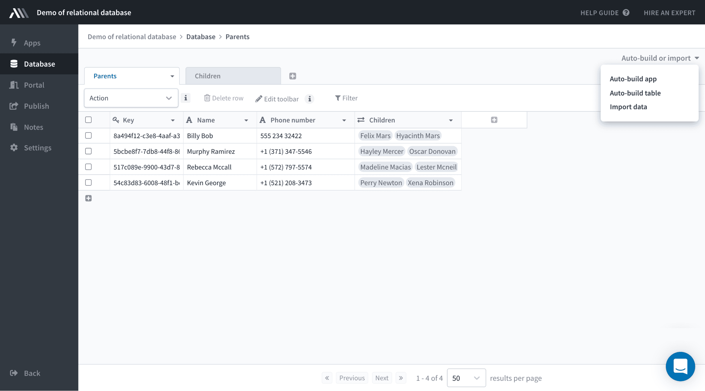
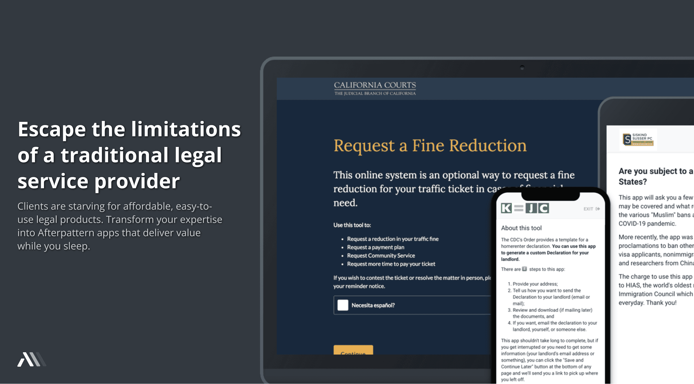

app builder 2021

A no-code app builder designed specifically for legal professionals.
Afterpattern was a no-code platform that enabled lawyers to build software applications. We merged the deep expertise of law firms with the efficiency of tech companies like LegalZoom, allowing legal professionals to convert their expensive knowledge into affordable, accessible, and personalized software products.
Acquired by NetDocuments in 2021 after helping 500,000+ people access legal services.
app builder 2021
In 2017, as Fellows at the Blue Ridge Labs tech incubator, two insights shaped our perspective. First, modest means New Yorkers universally agreed that "lawyers are for rich people." Second, web apps like TurboTax and LegalZoom were offering quasi legal services at scale at affordable prices.
What if the deep expertise of law firms could be merged with the efficiency of tech companies? What if there was a no-code app builder designed specifically for legal professionals?
app builder 2018
app builder 2019
app builder 2020
We didn't start by building a no-code app builder. We started by observing tech-savvy, entrepreneurial lawyers using Docassemble, an open-source expert system. In 2017, we launched The Docassemble Toolkit. By 2018, we had the confidence to launch our own no-code app builder.
By 2021, Afterpattern offered a full suite including an Airtable-like database, a document template editor with precise customization rules, and the ability to create protected client portals.
project database
document template editor
user-made app

user-made client portal
One of our biggest challenges was that Afterpattern was a new category of product. Our customers had never built legal apps before. Before we could train them how to do it, we had to convince them why they should.
I dedicated an immeasurable amount of time to the conception and development of Afterpattern University. It became not only a platform to provide technical know-how, but also a stage to emphasize the potential benefits and capabilities of legal apps.
marketing materials
lesson
tutorial
app marketplace
Before it was acquired by NetDocuments in November 2021, Afterpattern was the preferred app development tool for some of the most innovative legal professionals in the United States. These apps not only won national and regional awards, they helped more than 500,000 people access a wide range of traditionally expensive legal services—from keeping tenants in their homes during the COVID pandemic to helping immigrants navigate the Trump administration's "Muslim travel ban."
Today, as part of NetDocuments, Afterpattern continues to revolutionize legal services, maintaining its commitment to making the law understandable, affordable, and within reach for all.